Overview
This project implements:
- A 2D neural field for fitting RGB images from continuous coordinates.
- A vanilla NeRF pipeline using ray generation, point sampling, positional encoding, MLP inference, and volume rendering.
- Result visualizations including reconstruction images, PSNR curves, training progression, orbit renders, and depth renders.
Part 1: 2D Neural Field
Objective
The goal of Part 1 is to represent a 2D RGB image as a continuous neural function that maps image coordinates (u, v) to RGB values. Positional encoding is used to help the network capture higher-frequency details.
Single Image Reconstruction Results
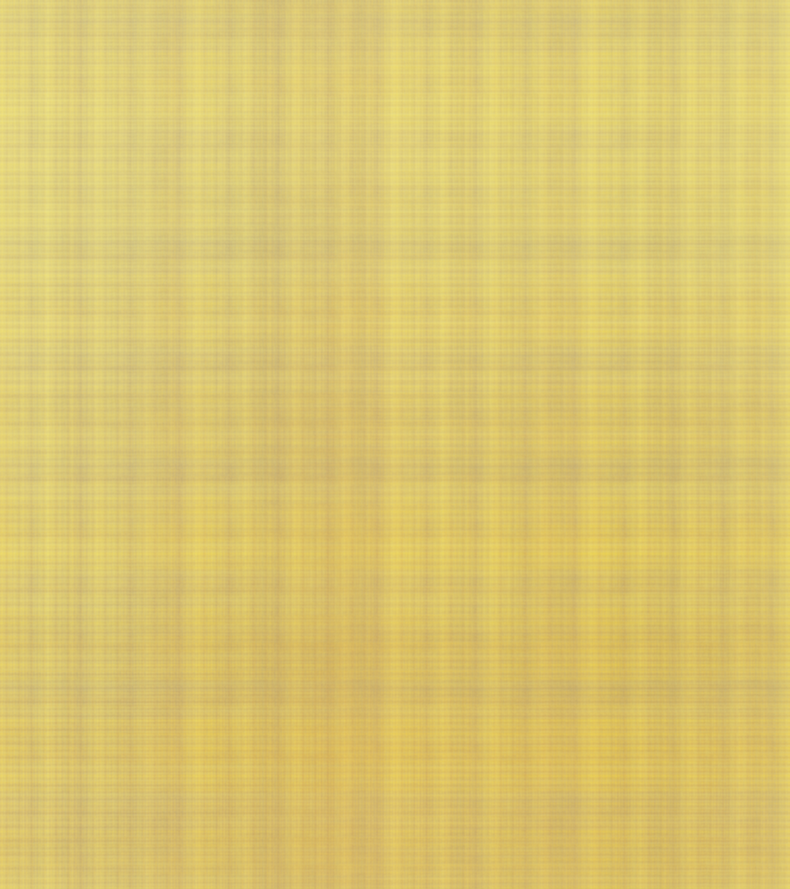
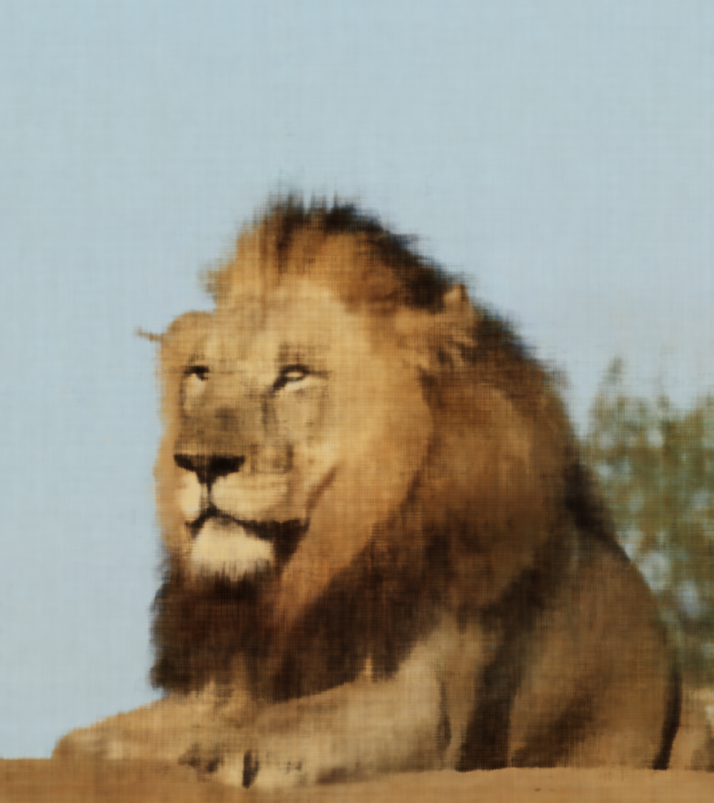
PSNR Curve
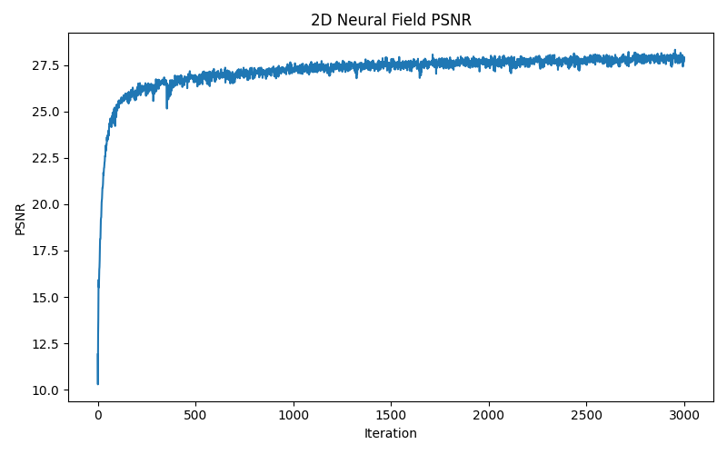
The PSNR curve shows reconstruction quality improving as training progresses. In early iterations, the image is blurry and coarse. As optimization continues, sharper structure and color details emerge.
Two-Image Progression


Hyperparameter Comparison Grid
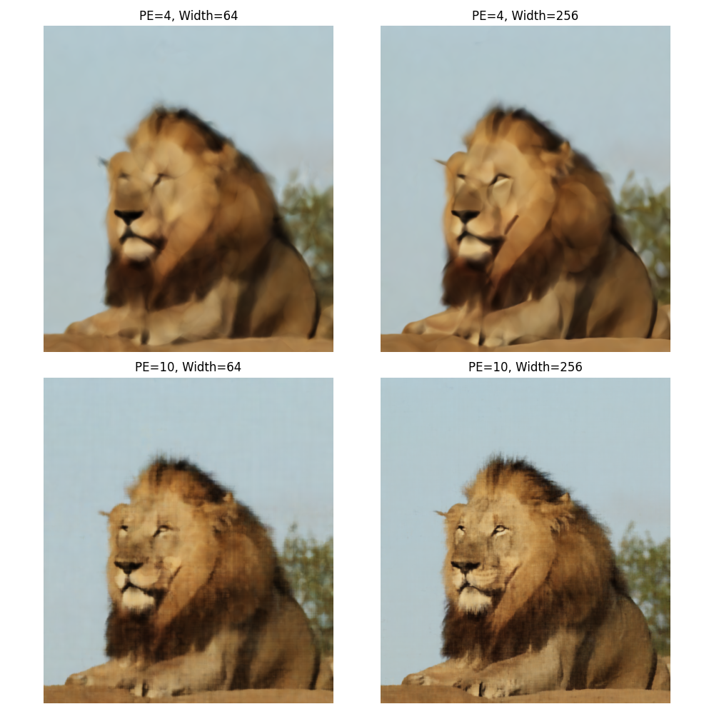
The grid compares the effect of changing positional encoding levels and hidden layer width. Lower-capacity models tend to miss fine detail, while higher positional encoding and larger hidden width usually improve sharpness and reconstruction fidelity.
Architecture report files are generated in the output folders, such as:
Part 2: NeRF on Provided Dataset
Objective
In this part, the scene is represented with a neural radiance field. Rays are cast from camera pixels, points are sampled along each ray, and an MLP predicts color and density for those points. Volume rendering integrates these values to synthesize the final image.
Ray and Sample Visualization
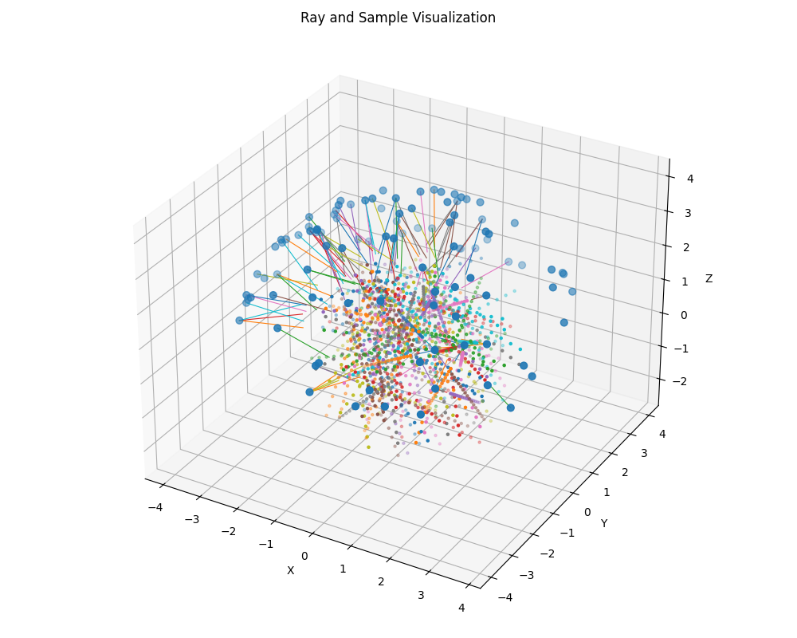
This figure helps explain the NeRF pipeline geometrically. The rays originate from camera centers, travel through the scene, and points are sampled along them between the near and far bounds.
Training Curves
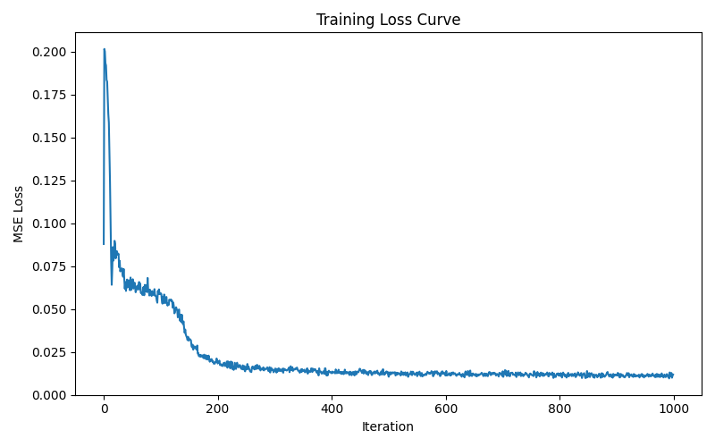
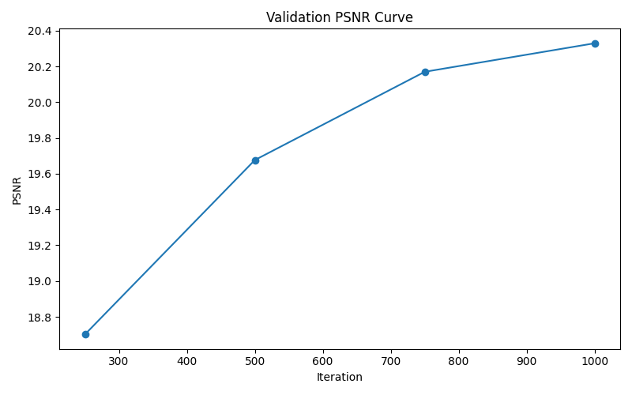
Intermediate Training Renders
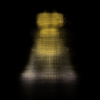
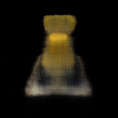

Novel View Rendering
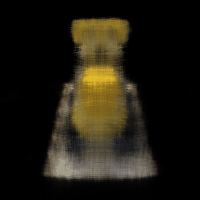
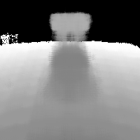
Part 3: NeRF on Custom Object Dataset
Objective
This section shows the same NeRF pipeline applied to a custom object dataset prepared by the user. The object is captured from multiple viewpoints and converted into an .npz dataset with camera poses and images.
Training Curves and Intermediate Results
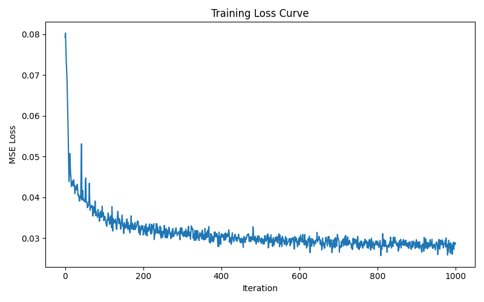

Custom Object Render Results
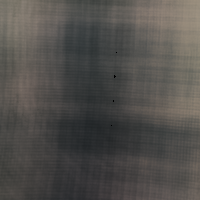
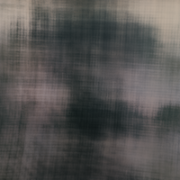

Custom Object Orbit and Depth Results


Steps to Run the Files
1. Install Required Packages
pip install torch torchvision numpy pillow matplotlib imageio
2. Required Project Structure
your_project/ │ ├── part1_2d.py ├── dataset_3d.py ├── model.py ├── rendering.py ├── visualization_utils.py ├── deliverables.py ├── train_nerf.py ├── run_part1_deliverables.py ├── run_part3.py ├── index.html │ ├── fox.png ├── my_image.png ├── lego_data.npz └── my_object_data.npz
3. Run Part 1 on a Single Image
python part1_2d.py
This trains a 2D neural field on fox.png and saves results in outputs_part1/.
4. Run Part 1 Deliverables
python run_part1_deliverables.py
This trains on both fox.png and my_image.png, and also generates the 2x2 comparison grid.
5. Run Part 2 NeRF on Provided Dataset
python train_nerf.py
This trains NeRF on lego_data.npz and saves all results in outputs_part2/.
6. Run Part 3 NeRF on Custom Object Dataset
python run_part3.py
This trains NeRF on my_object_data.npz and saves all results in outputs_part3_my_object/.
7. Open the Results Page
After the outputs are generated, simply open index.html in your browser to view all the results in one place.
Practical Notes
- For quick testing, reduce num_iters, rays_per_batch, and n_samples.
- Part 2 and Part 3 can take significant time depending on your machine.
- If some images or GIFs do not appear, check whether the exact filenames exist in the output folders.
- If needed, edit the file paths in this HTML to match your generated output filenames.
References
Technical References
- Mildenhall, B., Srinivasan, P. P., Tancik, M., Barron, J. T., Ramamoorthi, R., and Ng, R. NeRF: Representing Scenes as Neural Radiance Fields for View Synthesis. ECCV 2020.
- Tancik, M., Srinivasan, P. P., Mildenhall, B., Fridovich-Keil, S., Raghavan, N., Singhal, U., Ramamoorthi, R., Barron, J. T., and Ng, R. Fourier Features Let Networks Learn High Frequency Functions in Low Dimensional Domains. NeurIPS 2020.
- PyTorch Documentation.
- NumPy Documentation.
- Matplotlib Documentation.
- Pillow Documentation.
- ChatGPT for code debugging and understanding